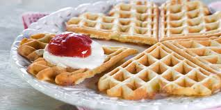
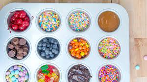

Waffles Recipe

Description
waffle, crisp raised cake baked in a waffle iron, a hinged metal griddle with a honeycombed
or fancifully engraved surface that allows a thin layer of batter to cook evenly and crisply.
Ingredients
- 2 large eggs
- 2 cups of all-purpose flour
- ½ cup vegetable oil
- 1¾ cups milk
- 1 tablespoon white sugar
- 4 teaspoons baking powder
- ¼ teaspoon salt
- ½ teaspoon vanilla extract
- nonstick cooking spray
Steps
- Preheat a waffle iron according to manufacturer's instructions.
- Whisk eggs in a large bowl until light and fluffy. Add flour, milk, and vegetable oil and mix to combine.
Whisk in sugar, then mix in baking powder, salt, and vanilla just until smooth, being careful not to overmix.
- Spray the preheated waffle iron with nonstick spray.
Pour batter onto into the hot waffle iron and cook until golden brown and the iron stops steaming, 3 to 5 minutes.
Repeat to cook remaining waffles.
Toppings

For the most traditional experience, top each waffle with butter and maple syrup.
But that's not the only way to enjoy this top-rated recipe!
Try one of these delicious ways to take your waffles up a notch:
- Bluberry sauce
- Nuts (such as pecans or walnuts)
- Vanilla glaze
- Nutella
- Homemade whipped cream
- Fresh berries (such as blueberries or strawberries)
Top Home